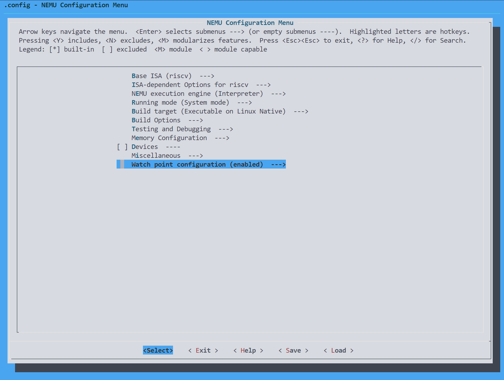

本人仅为兴趣使然记录过程，请尊重手册上的学术诚信条目。
扩展表达式求值
由于之前已经打好了大的框架，剩下的这些实现起来都很简单，对于像==，&&，!=这些二元运算符，将其添加到之前处理加减乘除的位置即可；对于指针解引用，寄存器的识别，跟之前的负号处理基本一致
这里针对寄存器，可以将$看作是一个一元运算符，也可以像我这样直接在make_token()函数中提前处理好
switch (rules[i].token_type) {
case TK_NUM:
case TK_HEX:
strncpy(tokens[nr_token].str, substr_start, substr_len);
tokens[nr_token].str[substr_len] = '\0';
break;
case TK_REG:
strncpy(tokens[nr_token].str, substr_start + 1, substr_len - 1); // skip the "$"
tokens[nr_token].str[substr_len] = '\0';
break;
}
识别成功后直接将$符号后的寄存器名称存入token
获取寄存器的值不多说，直接返回cpu.gpr[i]即可
实现监视点
首先补全框架提供的两个函数，其实就是基础的链表插入删除操作
WP* new_wp() {
if(free_ != NULL) {
WP *wp = free_;
free_ = free_->next;
wp->next = head;
head = wp;
return head;
}
else assert(0);
}
这里我将free_wp()的参数修改为了监视点的编号，方便后续调用
void free_wp(int no) {
WP *cur = head;
WP *pre = NULL;
/*find the target watch point*/
while(cur != NULL) {
if(cur->NO == no) {
break;
}
pre = cur;
cur = cur->next;
}
/*move it form head to free_*/
if(cur != NULL) {
if(pre != NULL) {
pre->next = cur->next;
}
else
head = cur->next;
}
cur->next = free_;
free_ = cur;
}
为了能够实现监视点的记录信息的功能，还需要在监视点结构中加入几个成员变量expr，old，expr记录监视点的表达式，old则记录旧值
同时为了接收从new_wp()函数中返回来的空闲监视点并记录相应数据，需要新建一个函数配合
void set_wp(char *expr, word_t res) {
WP *wp = new_wp();
wp->expr = malloc(strlen(expr) + 1);
strcpy(wp->expr, expr);
wp->old = res;
printf("Watch point:%d: %s\n", wp->NO, wp->expr);
}
之后为了在trace_and_difftest()函数中扫描所有的监视点，我们需要增加一个函数difftest_wp()，并且编写相应的Kconfig
bool difftest_wp() {
bool valid = true;
WP *wp = head;
while(wp != NULL) {
word_t new = expr(wp->expr, &valid);
if(new != wp->old) {
printf("Watchpoint %d: %s is triggered!\n", wp->NO, wp->expr);
printf("Old value = 0x%08x\n", wp->old);
printf("New value = 0x%08x\n", new);
wp->old = new;
return true;
}
wp = wp->next;
}
return false;
}
仿照Kconfig已经含有的的配置，琢磨了一下写了一个监视点配置，运行起来也没问题，有问题后面再改
choice
prompt "Watch point configuration"
default ENABLE_WATCHPOINT
config ENABLE_WATCHPOINT
bool "enabled"
config DISABLE_WATCHPOINT
bool "disabled"
endchoice
打开图形界面，能够正常显示

最后添加相应trace_and_difftest()逻辑即可
static void trace_and_difftest(Decode *_this, vaddr_t dnpc) {
#ifdef CONFIG_ITRACE_COND
if (ITRACE_COND) { log_write("%s\n", _this->logbuf); }
#endif
if (g_print_step) { IFDEF(CONFIG_ITRACE, puts(_this->logbuf)); }
IFDEF(CONFIG_DIFFTEST, difftest_step(_this->pc, dnpc));
#ifdef CONFIG_ENABLE_WATCHPOINT
if(difftest_wp()) {
nemu_state.state = NEMU_STOP;
}
#endif
}
其他的像打印监视点不再过多赘述，最后还需要在sdb.c完成相对应的指令函数，补全指令描述
实现断点
按照手册上操作发现表达式会报错，原因是寄存器数组并没有包含pc，判断表达式函数会认为它是非法的表达式，发现pc包含在了cpu结构体里，直接返回cpu.pc即可。同时还补全了打印寄存器函数的功能，使之可以打印pc的值
打印行数
在nemu/script/native.mk添加即可
count:
@find $(NEMU_HOME)/ -name "*.c" -o -name "*.h" | xargs wc -l
count_no_blank:
@find $(NEMU_HOME)/ -name "*.c" -o -name "*.h" | xargs grep -v '^\s*$$' | wc -l
具体MakeFile的编写规则可以参照 跟我一起写Makefile
PA 1-3结束